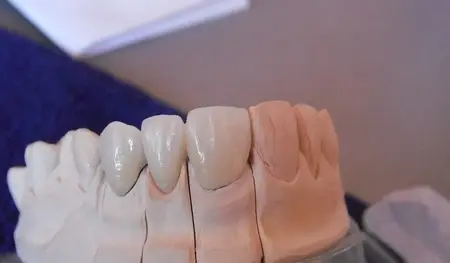

Lucrati doar digital?
Nu. Colaboram atat pe amprente clasice, cat si pe scanari intraorale.
Contact
Contacteaza laboratorul pentru lucrari pe amprenta clasica sau scanare intraorala. Nu trimite prin formular date identificabile ale pacientului.

Date directe
Intrebari frecvente
Nu. Colaboram atat pe amprente clasice, cat si pe scanari intraorale.
Da. Un caz potrivit este cea mai concreta modalitate de a evalua colaborarea.
Da. Detaliile platformei si componentelor se confirma pentru fiecare caz.
Contactati laboratorul pentru stabilirea canalului potrivit si a informatiilor necesare.